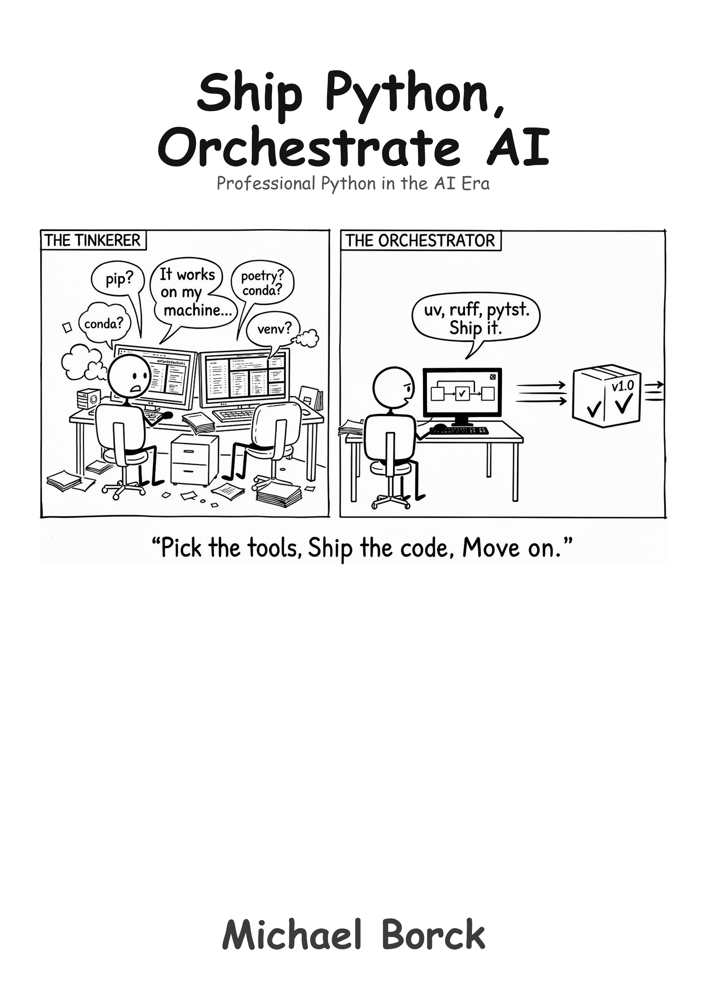

flowchart TD
CND["Conversation,<br/>Not Delegation"]
CPPA["Converse Python,<br/>Partner AI"]
Think["Think Python,<br/>Direct AI"]
Code["Code Python,<br/>Consult AI"]
Ship["Ship Python,<br/>Orchestrate AI"]
Web["Build Web,<br/>Guide AI"]
CND --> CPPA
CND --> Web
CPPA --> Think
Think --> Code
Code --> Ship
Ship Python, Orchestrate AI
Professional Python in the AI Era
Preface

Why This Book Exists
You can write Python. Now what?
The gap between writing scripts that work on your machine and shipping software that other people can use is enormous. The Python ecosystem offers hundreds of tools to bridge that gap — and that is exactly the problem. Which virtual environment tool? Which formatter? Which testing framework? How do you manage dependencies? How do you structure a project? The questions feel endless, and every answer leads to three more.
This book grew out of my own search for a sane, repeatable workflow for Python projects. I needed a pipeline that could target multiple platforms — web apps, PWAs, Docker containers, Windows, Linux, Mac — from a single codebase. I wanted something that was simple by default but could scale when needed, without bolting on complexity for edge cases that did not yet exist. The result is what you will find in these pages: a deliberate 80/20 approach. The 20% of practices that yield 80% of the benefits.
We settle on specific tools — uv, ruff, mypy, pytest — not because they are the only options, but because making a decision and committing to it is more productive than endlessly evaluating alternatives. If you are working in a large team with established conventions, you may choose differently. This book is for everyone else: solo developers, small teams, prototypers, and anyone who wants a professional workflow without the overhead.
Who This Book Is For
- Python developers ready to move beyond scripts to professional projects
- Solo developers and small teams who need a complete workflow without enterprise overhead
- Prototypers who want to ship to multiple platforms from one codebase
- Anyone overwhelmed by Python tooling choices who wants someone to just make the decisions
You should be comfortable writing Python. If you are still learning the language itself, start with Code Python, Consult AI. This book assumes you can write functions, use data structures, and debug basic errors. It teaches you what to do with that skill.
What This Book Is Not
This is not a Python tutorial. It does not teach the language. It teaches the professional practices around the language: project structure, version control, dependency management, testing, documentation, and deployment.
It is not an enterprise DevOps guide. It does not cover large-team workflows, complex CI/CD orchestration, or Kubernetes. It covers what a solo developer or small team needs to ship reliable software. The practices scale, but the book does not add complexity for situations that may never apply to you.
It is not a tool comparison. It does not present five options for every choice and leave you to decide. It picks one, explains why, and moves on. Simple but not simplistic — that is the guiding principle.
And it is not a book that ignores AI. But it uses AI differently from the other books in this series. Code Python, Consult AI teaches you to think with AI, to explore concepts and build understanding through conversation. This book teaches you to orchestrate AI, to set up the project structure, testing, and automation so that AI-generated code has somewhere safe to land. Without a proper pipeline, AI produces code you cannot test, cannot deploy, and cannot maintain. With one, AI becomes a force multiplier. The pipeline is what makes the difference.
If You Are Feeling Overwhelmed
That is the normal response to the Python ecosystem. The number of tools, frameworks, and opinions about “the right way” to do things is genuinely staggering. This book exists to cut through that noise. You do not need to evaluate every option. You need one good workflow that works, and the understanding to adapt it when your needs change.
How This Book Is Structured
The book builds a complete development pipeline in stages:
- Setting the Foundation — project structure, version control, virtual environments
- Advancing Your Workflow — dependency management, code quality (ruff), testing (pytest), type checking (mypy)
- Documentation and Deployment — documentation, CI/CD automation
- Case Study — applying everything to a real project (SimpleBot)
- Multi-Platform Distribution — shipping to web, desktop, PWA, and containers from one codebase
Companion templates let you start new projects with the recommended structure immediately:
- Cookiecutter template:
cookiecutter gh:michael-borck/ship-python-cookiecutter - GitHub template: ship-python-template
- Example project: ship-python-example
Conventions Used in This Book
Code examples appear with syntax highlighting:
uv run pytest --cov=srcTerminal output and configuration content appear as plain text blocks:
my_project/
├── src/
│ └── my_package/
└── tests/Throughout the chapters you will find:
- AI Tips — practical advice for using AI with the practice being taught
- Callout boxes — important notes, tips, and warnings highlighted for reference
The Series
This book is part of a series designed to help you master modern software development in the AI era.
Conversation, Not Delegation — the general methodology for working with AI across any discipline.
Converse Python, Partner AI — intentional prompting methodology applied to software development.
Think Python, Direct AI — computational thinking for absolute beginners.
Code Python, Consult AI — focused Python fundamentals with AI integration.
Ship Python, Orchestrate AI (this book) — professional Python development practices and tooling.
Build Web, Guide AI — web development with AI as your development partner.
All titles are available at books.borck.education.
Ways to Engage with This Book
This book is available in several formats. Pick whichever fits how you work and learn.
- Read it online. The full book is freely available at the companion website, with dark mode, search, and navigation.
- Read it on paper or e-reader. Available as a paperback and ebook through Amazon KDP.
- Converse with it. The online edition includes a chatbot grounded in the book’s content.
- Feed it to your own AI. The
llm.txtfile provides a clean text version of the entire book, ready to paste into ChatGPT, Claude, or any AI tool. - Run the code. All code examples and templates are available on GitHub. DeepWiki provides an AI-navigable view of the repository.
- Browse all books. This book is part of a series. See all titles at books.borck.education.
The online version is always the most current.
Source Code & Feedback
All code examples, templates, and supplementary materials are available at:
- This book’s repository: https://github.com/michael-borck/ship-python-orchestrate-ai
- Cookiecutter template:
cookiecutter gh:michael-borck/ship-python-cookiecutter - GitHub template: https://github.com/michael-borck/ship-python-template
- Example project: https://github.com/michael-borck/ship-python-example
Found an error? Have a suggestion?
- Open an issue: https://github.com/michael-borck/ship-python-orchestrate-ai/issues
- Email: michael@borck.me